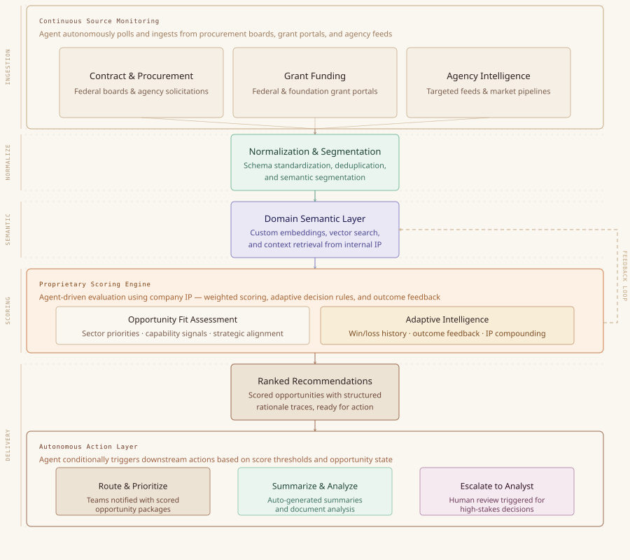
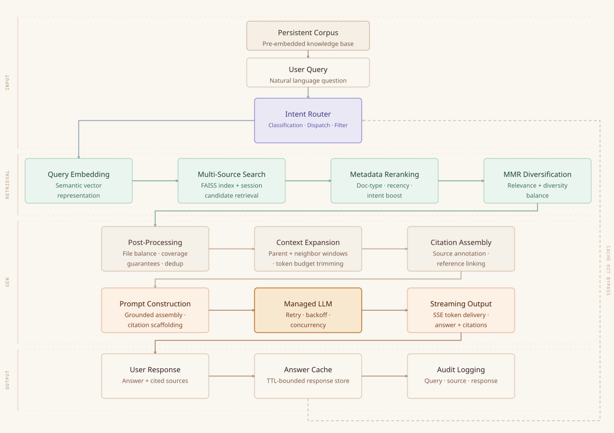
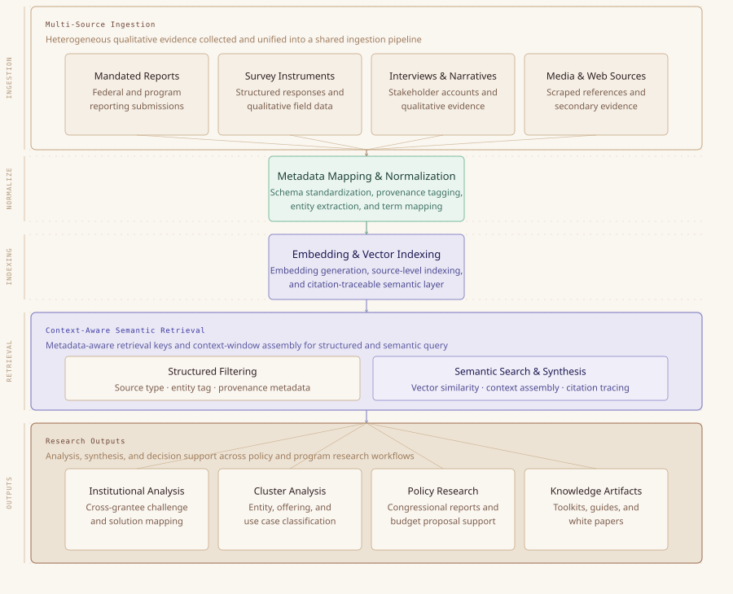
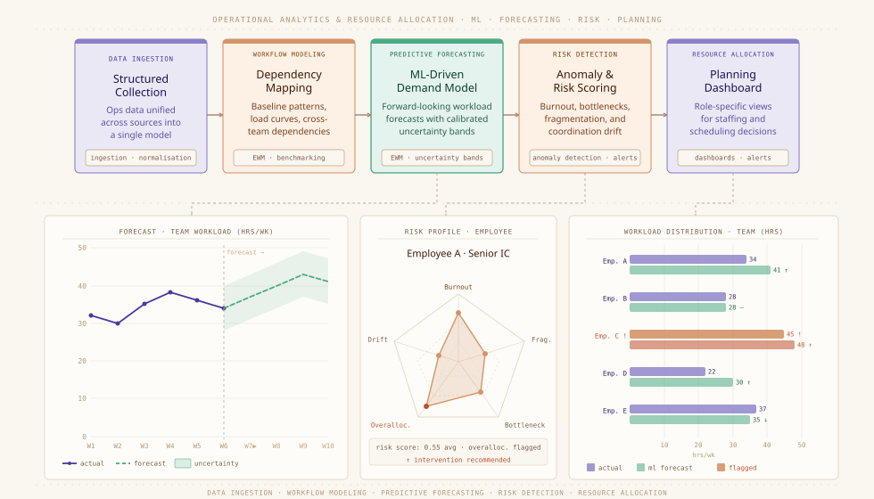
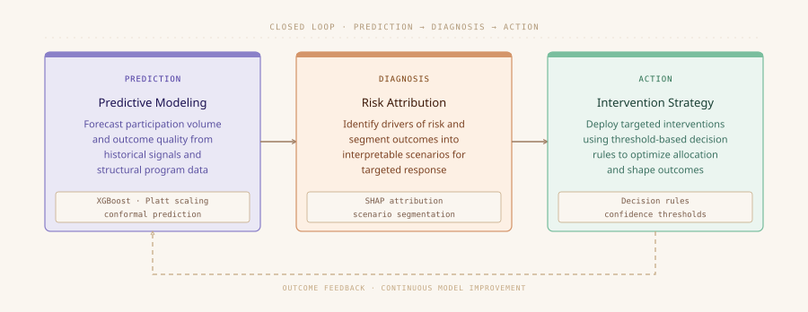
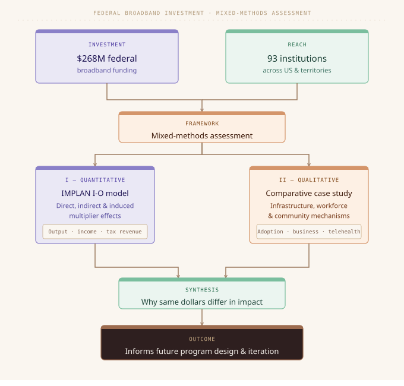
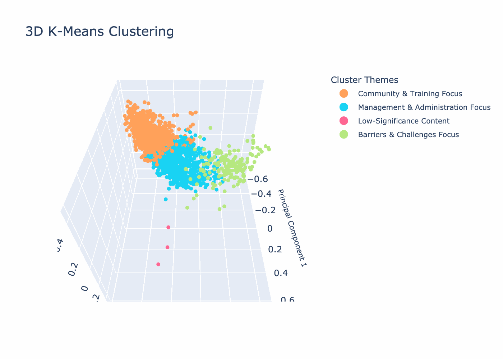
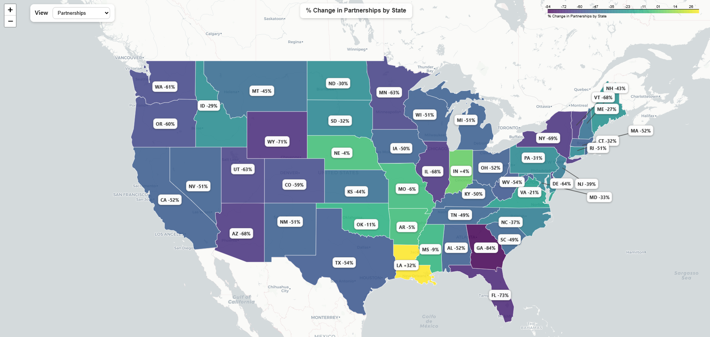

I design systems that transform complex data, documents, and policy contexts into actionable decisions — bridging technical rigor with real-world impact.
"My work focuses on turning fragmented data, documents, and qualitative inputs into structured, usable intelligence."
I'm a data scientist and AI systems builder who operates at the intersection of technical architecture and applied research. My work spans decision support systems, knowledge pipelines, and economic analysis — with a consistent focus on making complex information actionable.
I bring together machine learning, NLP, and systems design with deep domain knowledge in economic and policy research. I build things that are meant to be used — not just analyzed.
AI-powered pipelines that synthesize multi-source intelligence into clear, structured outputs for high-stakes decisions.
OCR, LLM extraction, and retrieval-augmented architectures that unlock value locked in unstructured documents.
Predictive models, NLP classifiers, and statistical frameworks tuned for operational and policy contexts.
Rigorous quantitative analysis connecting data-driven methods with economic theory and policy implications.
Develop and maintain production-grade analytics pipelines and agentic workflows that unify structured records with narrative text sources. Apply ML/NLP to transform qualitative inputs into decision-ready metrics and support econometric broadband impact modeling used in policy research.
Developed supervised and unsupervised machine learning models for client research engagements, engineered ETL pipelines to prepare large datasets for modeling, and implemented evaluation practices to strengthen reproducibility.
Built predictive models to analyze membership behavior and improve retention-oriented campaign strategy. Automated recurring data pipelines and integrated structured and unstructured CRM data for fuller lifecycle visibility.
An agentic opportunity intelligence system that continuously monitors, evaluates, and routes contract and grant opportunities through a stateful, human-governed pursuit workflow.
A production-grade, multi-source RAG system with corpus, document-only, and hybrid modes that delivers citation-ready, context-grounded intelligence for policy and program decisions.
A machine learning decision system that forecasts demand and outcome quality, then operationalizes targeted intervention strategies to improve participation and resource alignment.
Published mixed-methods research combining regional econometric analysis and qualitative evidence synthesis to evaluate federal broadband funding impacts and policy implications.
Designing agentic pipelines and structured reasoning workflows that support human-governed decisions in policy and program environments.
Building NLP and embedding-based systems that extract, align, and surface meaning from heterogeneous document corpora and operational data.
Using econometric modeling and mixed-methods research to evaluate federal investment outcomes and inform infrastructure policy recommendations.
Translating complex, multi-layered datasets and document-driven findings into clear, interactive deliverables for analytical and executive audiences.
A deep look at the systems, pipelines, and analyses I've built — organized by domain and designed for exploration.
BOOM is an end-to-end agentic platform that ingests contract and grant opportunities, evaluates them against organizational priorities, and executes downstream actions such as prioritization, routing, summarization, and analyst escalation. The system combines automated decision support with human oversight, enabling faster and more consistent pursuit workflows.
Business development teams face fragmented, high-volume opportunity streams with inconsistent structure and changing requirements. Traditional tools surface opportunities but do not actively move them through the pursuit process, resulting in missed high-fit opportunities and inefficient use of analyst time.
BOOM operates as a stateful orchestration layer that:
(1) continuously ingests and monitors opportunity sources,
(2) normalizes and semantically structures incoming data,
(3) retrieves relevant internal context from capabilities, offerings, and prior work,
(4) evaluates opportunity fit using proprietary scoring logic, and
(5) conditionally triggers downstream actions such as routing to teams, generating summaries, initiating document analysis, and preparing decision support outputs.
Opportunities progress through defined lifecycle states, with human review incorporated at key decision points.
The system integrates Python services, schema-constrained LLM prompting, custom embeddings, vector search, and GCP-based orchestration into a unified execution layer. Within defined bounds, BOOM selects appropriate processing steps, maintains opportunity state, and generates structured rationale for its outputs.
Reduced opportunity review time by ~70% and enabled a small team to process 200+ opportunities monthly. By automating triage, prioritization, and initial analysis, BOOM allows teams to focus on high-value pursuit decisions.

A production-grade decision intelligence RAG system engineered for high-reliability retrieval, grounded generation, and operational scalability. It supports corpus retrieval, document-scoped retrieval, and hybrid retrieval across persistent and session-level sources.
The interaction layer supports query, document ingestion, and streamed response channels, with runtime mode selection across retrieval strategies. Intent routing classifies query context and dynamically selects corpus, document, or hybrid retrieval behavior.
The architecture combines a persistent enterprise knowledge corpus (chunk store, parent-section mappings, vector indexes, and metadata manifests) with ephemeral session uploads that are extracted, segmented, embedded, and indexed in-memory for low-latency retrieval.
The retrieval engine materializes multi-index stores into memory, builds chunk/parent/neighbor lookup graphs, infers document classes, and maintains metadata-aware catalogs for entity-specific retrieval. Query flow: embedding -> multi-source candidate search -> intent- and metadata-aware reranking -> MMR diversification -> post-processing for file balance, coverage guarantees, and redundancy control.
The generation layer uses a managed LLM service with citation-grounded prompt policies, streaming output, retry/backoff resiliency, and concurrency controls. Context assembly expands parent and neighbor windows, annotates references, and trims to token budgets. Observability includes response caching, structured telemetry, timing/error traces, and source-level audit logging.
Improved answer quality, traceability, and operational reliability by combining metadata-aware retrieval, citation-ready context construction, and production controls. Teams can make faster decisions with stronger evidence coverage across both persistent knowledge and session uploads.

A production qualitative research database that transforms unstructured evidence into a context-aware semantic knowledge layer for analysis, synthesis, and decision support.
Critical research evidence arrived in fragmented formats and channels, including federally mandated reports, interviews, survey instruments, and scraped media references. Manual cross-source synthesis was slow, inconsistent, and difficult to operationalize at scale.
Built a unified ingestion and normalization architecture that maps heterogeneous qualitative sources into a flexible schema, preserves provenance metadata, and supports both structured filtering and semantic retrieval through shared context objects.
Implemented embedding generation, vector indexing, metadata-aware retrieval keys, and context-window assembly to create a robust semantic layer. Combined schema-flexible storage with source-level indexing, entity tagging, and citation-traceable links for reliable qualitative search and synthesis.
Provided core research capacity for multiple annual congressional reports, supported budget proposal development, and enabled a broadband policy research paper that paired econometric modeling with the qualitative analysis capabilities of the database.

An operational intelligence platform combining machine learning, predictive workflow analytics, and resource-allocation visibility to improve delivery performance in multi-project environments.
Program leadership lacked timely integrated signals for workflow health and resource pressure. This increased exposure to burnout risk, workstream fragmentation, and poor coordination across interdependent project teams.
Built a unified operations model across multiple systems, mapped dependencies between workflow stages and staffing patterns, and delivered role-specific views with forward-looking indicators for capacity planning and allocation decisions.
Applied predictive modeling for workload and resource demand, anomaly detection for coordination drift, and risk scoring for burnout, fragmentation, and handoff bottlenecks. Combined forecasting outputs with rule-based operational alerts and planning dashboards.
Teams consistently completed workstreams in fewer hours than prior projections, while improved division of labor reduced duplicate effort and clarified ownership. Operational response cycles accelerated as risks were identified earlier and addressed before escalation.

Designed and implemented a predictive system that forecasts participation dynamics and outcome quality, then translates those forecasts into targeted intervention strategies. In federal participation-driven programs, this enables teams to anticipate variability, optimize resource allocation, and influence outcomes instead of reacting after trends emerge.
Organizations operating in uncertain, participation-driven federal environments lacked visibility into future demand and outcome distribution. This produced resource mismatches (overload vs. underutilization), ineffective or poorly timed outreach, and limited ability to correct course once trends appeared. Even where forecasts existed, there was no structured system for operational action.
Built a two-layer system. Predictive Layer: modeled expected volume and quality from historical program data, behavioral signals, and structural characteristics. Intervention Strategy Layer (designed and implemented): converted model outputs into action by identifying risk drivers, segmenting scenarios (low participation risk, low quality risk, imbalance), designing targeted interventions, and defining decision rules for deployment based on confidence and threshold logic. This created a closed loop: prediction -> diagnosis -> action.
Gradient boosted trees (XGBoost) for predictive modeling; probability calibration (Platt scaling) for reliable decision thresholds; conformal prediction for uncertainty ranges; SHAP for feature attribution and strategy design inputs; scikit-learn pipelines for reproducibility and deployment.
Forecast accuracy reached approximately 15% of actual outcomes. Enabled proactive resource allocation aligned to predicted demand, implemented targeted intervention strategies that improved participation distribution and outcome quality, and reduced intuition-only decision making by embedding data-driven rules into federal program operations.
Designed not just a forecasting model, but an actionable decision system that bridges prediction and execution by operationalizing insights into repeatable intervention strategies.
Forecasting creates value only when predictions are systematically linked to interventions that can change outcomes in real time.

A published research project analyzing the economic impact of federal broadband funding through a custom mixed-methods framework that pairs regional econometric analysis with large-scale qualitative evidence synthesis.
Policy stakeholders needed causal, region-specific estimates of economic effects, but quantitative findings alone were insufficient for implementation interpretation. Existing analyses lacked a unified structure linking economic outcomes to on-the-ground qualitative evidence from communities and program actors.
Designed a custom mixed-methods approach: regional econometric modeling measured outcome effects across employment, income, and local business indicators, while a comprehensive qualitative database provided context-aware evidence for mechanism interpretation, implementation constraints, and policy sensitivity analysis.
Findings were used to inform federal broadband policy conversations and implementation strategy discussions, with quantitative and qualitative synthesis improving confidence in where and why impacts were strongest.
Published as a formal research paper and presented across multiple speaking engagements, including policy-focused presentations, research briefings, and practitioner sessions that translated technical findings into applied decision guidance.

Combined listening-session NLP analysis with implementation scenario research into a single service layer for policy intelligence. The system synthesizes unstructured inputs, policy documents, and geography-linked infrastructure data to surface actionable implementation insights.
Public inputs and state implementation choices were being analyzed in silos, obscuring cross-signal patterns. Stakeholders lacked an integrated framework to connect thematic concerns, sentiment trends, geographic disparities, and likely policy outcome tradeoffs.
Built an integrated analysis workflow that ingests comments, transcripts, and plan artifacts; performs multi-stage NLP enrichment; and links outputs to geospatial coverage and demographic context for comparative policy scenario assessment.
Applied supervised and weakly supervised classification, semantic clustering, sentiment analysis, and topic modeling to identify dominant concerns and emerging issue clusters. Combined these with geospatial analysis and advanced visualization including choropleth + bivariate maps, Sankey flow diagrams for theme transitions, and network graphs linking stakeholder groups to priority topics.
Enabled policy teams and external stakeholders to evaluate implementation pathways using integrated qualitative, NLP, and geospatial evidence. Improved speed and clarity of evidence synthesis during active federal and state broadband decision windows.


Open to collaborations in AI systems, data science, and applied research.
Open to contract, advisory, and collaborative research engagements in AI systems and policy analysis.
RAG architectures, decision pipelines, document intelligence
NLP, predictive modeling, analytical systems for civic/gov contexts
Broadband, digital equity, federal program analysis and evaluation
Presented research at an international, multidisciplinary conference of economists, policymakers, and regional scientists focused on spatial and economic analysis. Shared a mixed-methods framework integrating quantitative modeling with qualitative insights to inform broadband policy and regional development strategies.
Panelist at a national convening hosted by multiple Federal Reserve Banks, bringing together researchers, policymakers, and practitioners to advance work on digital access and economic inclusion. Contributed perspectives on equity-focused broadband deployment and the role of data in identifying and addressing disparities in underserved communities.
Delivered a policy-focused presentation for a national broadband policy audience, examining evolving BEAD implementation strategies and demonstrating how NLP methods can be used to systematically analyze policy documents and public input at scale.
Panel discussion with regional leaders and practitioners on practical approaches to identifying high-value AI use cases within organizations, with emphasis on implementation strategy, change management, and aligning technical capabilities with operational needs.